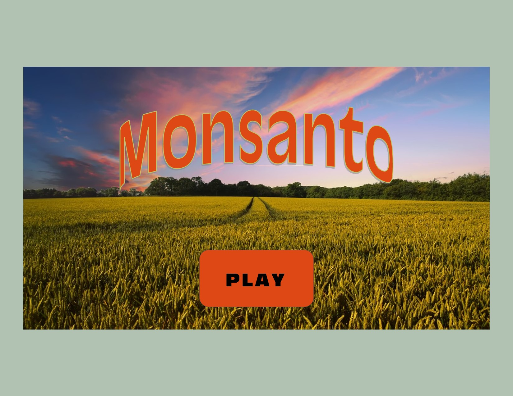
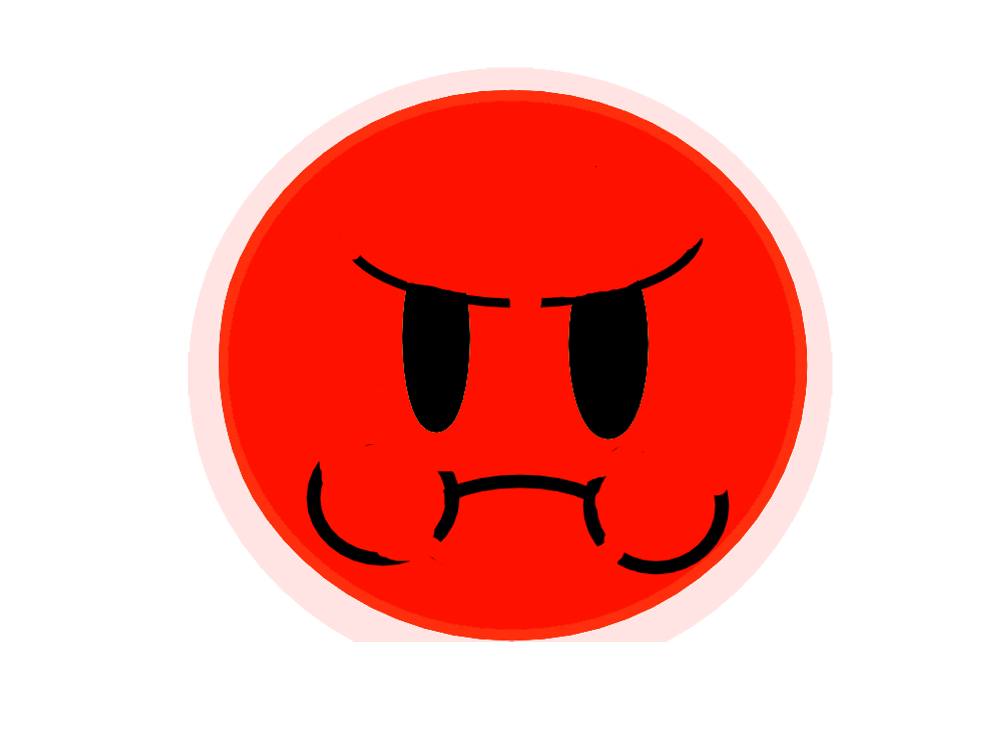
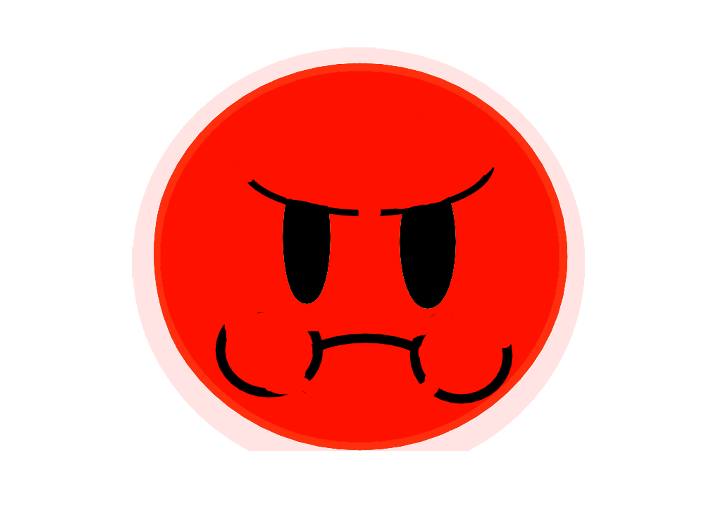
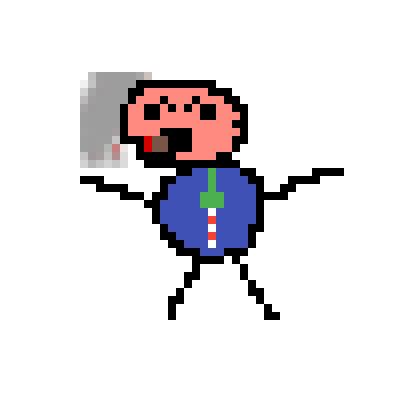
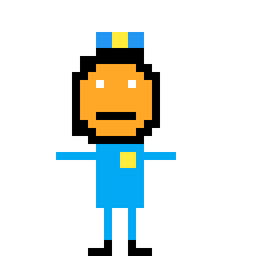
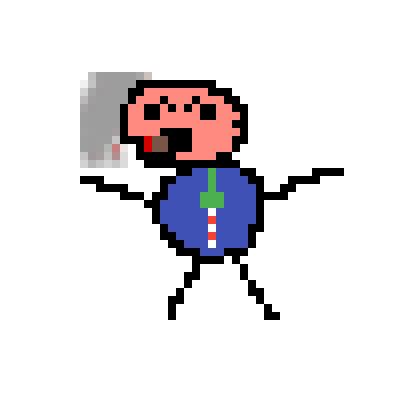
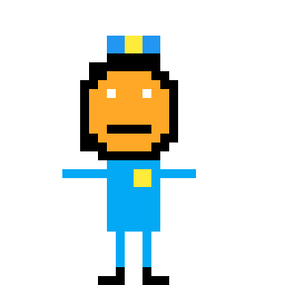

How To Play:
The object of the game is to sue all of the farms on the board.
you can buy upgrades in the store to help speed up your
progression.
Farms with green leaves are organic farms;
if organic farms are cross-pollinated by your farms nearby they appear with an
exclamation mark.
For $10,000 you can sue a cross-pollinated farm
and it becomes a Monsanto customer. Customer farms appear with an 'M'.
If you purchase chemicals in the research part of the store your toxicity
percentage will increase. The higher your toxicity percentage is, the
likeliness of a Monsanto customer getting cancer will also increase.
The PR section of the store will be helpful with legal fee reductions
and reputation increases wich will also increase your income.
The Lobbyist section of the store will help by decreasing taxes and will also
negate the time cost for other upgrades.
The Research area of the store will give you more income but the toxicity
will increase with every upgrade.


 





 


